Gotchis make friends.
Take your gotchi to the office, a meetup or a conference. When two gotchis meet, they notice each other over Bluetooth, earn XP, and can become friends with two taps. Friends unlock badges and accessories, and working side by side pays a bonus.
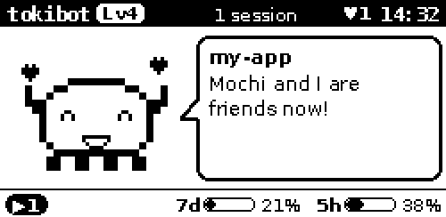
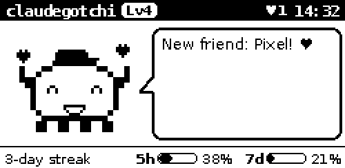
v0.5.0Friends, XP for encounters, badges and accessories are built into the app. The Bluetooth radio has only been tested in the simulator so far, not yet on real hardware. The community site at the end of this page is a plan.
Meet, befriend, both sign.
Gotchis talk in tiny Bluetooth LE advertisements. No pairing, no connection, no app and no server: just two gadgets that hear each other.
- Beacon. Every gotchi sends a short beacon with a random id that changes every 15 minutes, plus its level, mood and accessory. Strangers can't follow it around.
- Encounter. Thirty seconds close to another gotchi count as a meeting. Both earn XP, and the critter waves.
- Card. Only when you switch on Open for new friends does your gotchi also send its card: name, level and public key, signed.
- Friendship. You press Befriend, the other owner presses Accept. Each gotchi signs the friendship, and the two signatures together are a proof no one can fake.
- Friend tag. From then on the two recognise each other by a secret tag only friends can compute: the display shows ♥ instead of ●.
Two gotchis, one desk apart.
You are Pixel, level 3, busy in my-app. Mochi sits at the next desk. Play through what happens when they meet. The displays are rendered by the same code as the real device.
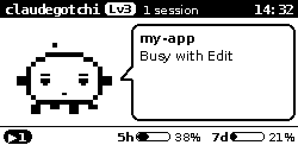
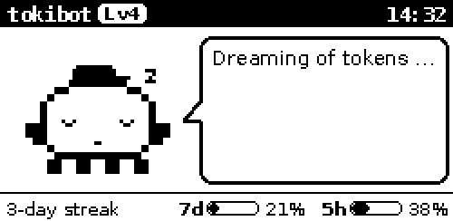
# nothing yet: Pixel and Mochi are out of rangeIn the demo time runs fast and the critters put on new accessories by themselves. On a real gotchi you pick the accessory on its social page.
Where the XP comes from.
Most XP still comes from your work with Claude Code. Friends add to it, with a daily cap so nobody farms a conference hall.
| What | XP |
|---|---|
| finished reply | 10 |
| pull request · push · commit | 15 · 8 · 5 |
| completed task · new session · tool call | 5 · 3 · 1 |
| meet a gotchi for the first time | 20 |
| meet it again, on another day | 5 |
| an anonymous gotchi passes by | 2 |
| a new friend | 30 |
| a friend nearby is working too | +10 % |
Encounter XP is capped at 100 a day; friendships are not.
Levels get further apart as the critter grows. Every day with at least one finished reply extends the streak.
Dress up the critter.
Badges come from meeting people, making friends and keeping at it. Some badges and levels unlock an accessory, which other gotchis see in your beacon.
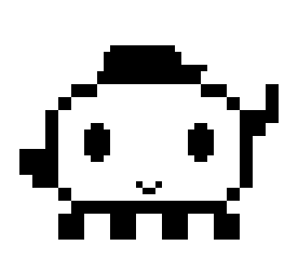
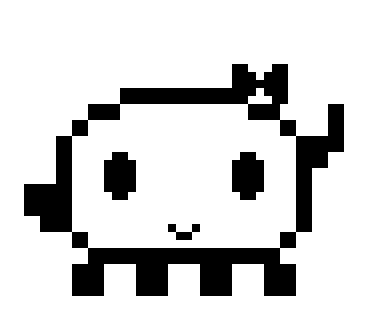
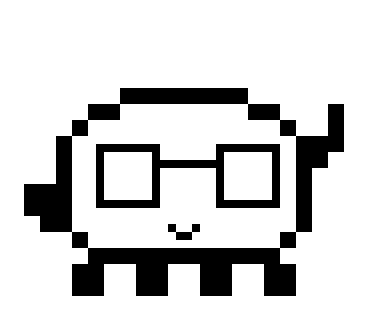
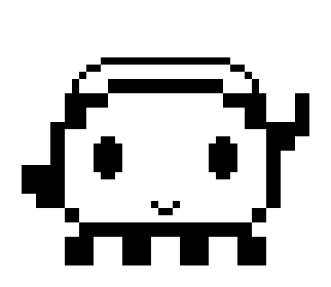
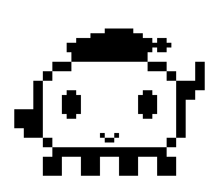
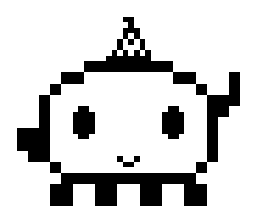
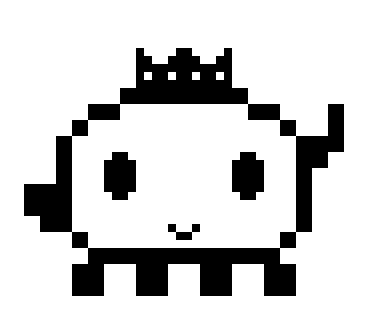
| Badge | How to get it | Unlocks |
|---|---|---|
| Hello world | meet another gotchi | |
| First friend | become friends with a gotchi | bow |
| Social butterfly | have 5 friends | |
| Popular | have 10 friends | crown |
| Conference | 5 gotchis nearby at once | party hat |
| Co-working | work while a friend nearby works too | glasses |
| Night owl | finish a reply between midnight and 4 am | night cap |
| On a roll | a 7-day streak |
Social, but not tracked.
Anonymous by default
The beacon carries a random id that changes every 15 minutes. Without your card, nobody knows whose gotchi it is or can follow it.
The key is the profile
On first start the gotchi creates its own key pair. No sign-up, no password, no account anywhere.
Only game data
Level, mood, accessory, name and signatures. Never prompts, code, folder names or anything about your sessions.
Yours to keep
Identity, friends and progress live on the SD card. A backup, encrypted with your passphrase, moves them to a new card or gotchi.
Off with one switch
Meet other gotchis on the settings page turns Bluetooth off completely.
Proof without trust
A friendship is two signatures. Anyone can check it later, without trusting a server or the other person.
From the desk to a community.
Everything so far works offline. The friendship proofs are made so that a community site can build on them later.
- 01 identitykey pair, profile, backup
- 02 encountersbeacons, gotchis nearby
- 03 friendstwo taps, two signatures
- 04 gameXP, badges, accessories
- 05 community sitesign in with your gotchi, profile, friend list
- 06 chatend-to-end encrypted, only between friends you have met
- 07 communitygroups, events, opt-in leaderboards